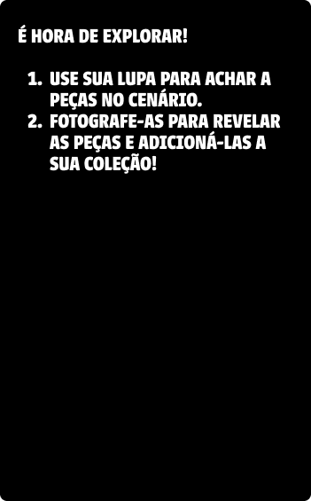

🌅 Modo HDRI
🗑️ Limpar Peças

0
de
0
peças fotografadas
🧩 Quebra-Cabeça
Arraste as peças para os locais corretos!
Peças
Montagem
🔄 Reiniciar
⬅️ Voltar ao AR
🎉
Parabéns!
Você completou o quebra-cabeça com sucesso!
0
peças montadas
0
segundos
🔄 Jogar Novamente
ğŸ Voltar ao InÁcio